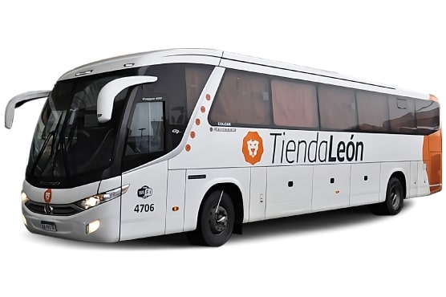
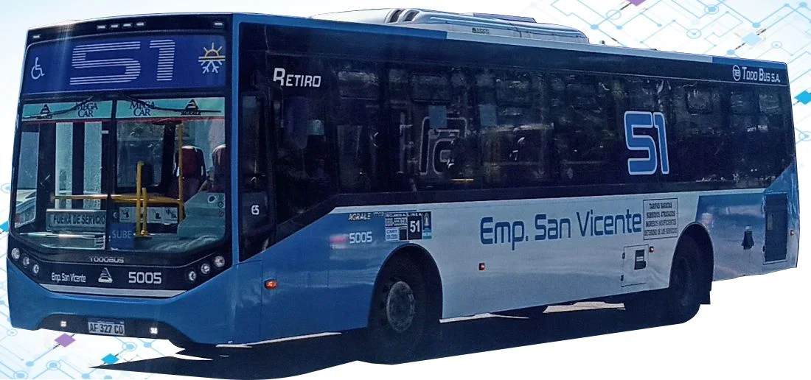
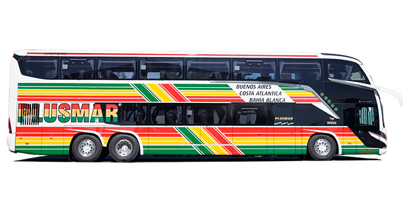
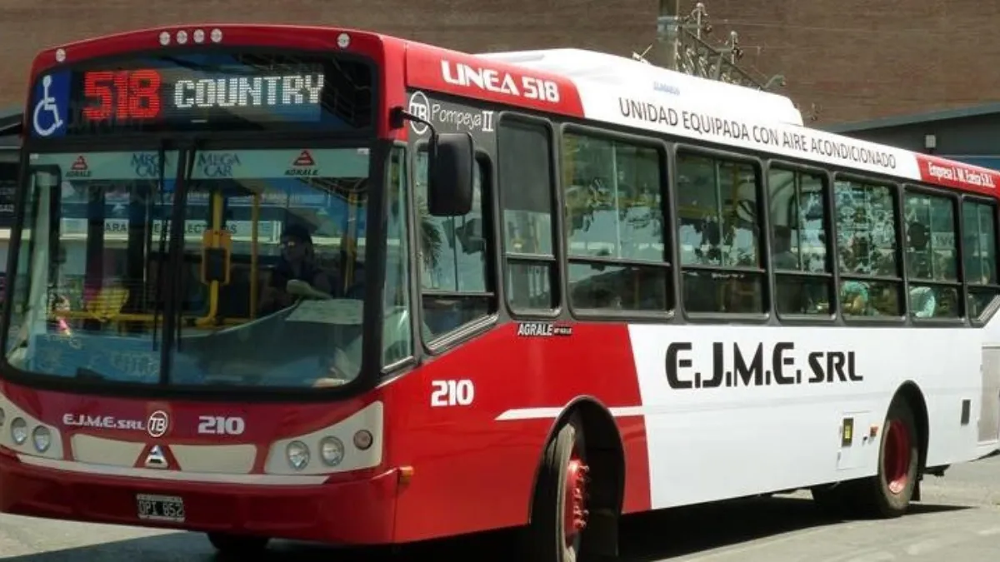

Opciones de Transporte
Conocé los distintos medios de transporte disponibles para viajar desde el Aeropuerto Internacional Ezeiza.

Servicio Ejecutivo - Tienda León
Servicio premium con conexión rápida hacia CABA y Aeroparque.


Colectivo Urbano Regional - Línea 51
Conexión regional con múltiples paradas hacia zona sur y Constitución.

Micros de Larga Distancia
Servicios directos hacia distintas provincias del interior del país.

Colectivo Urbano Local - Línea 518
Servicio local entre el aeropuerto y la estación de tren de Ezeiza.